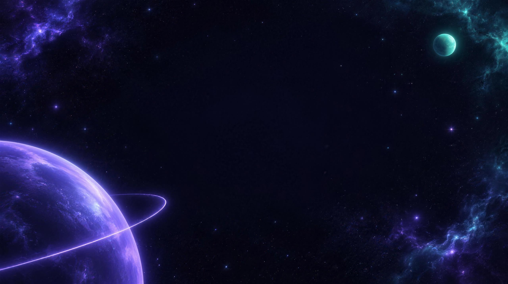
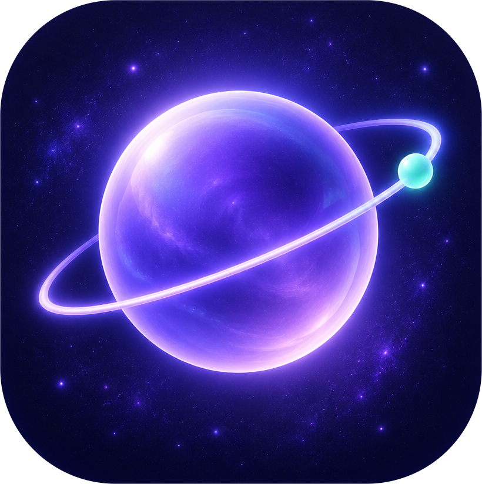
Orbit
L'IDE construit autour de  Claude Code
Claude Code
Claude Code
Le cœur
Pas un chat greffé. De vrais terminaux.
Six Claude Code, une seule fenêtreLa grille d'agents
Le vrai Claude Code dans de vrais terminaux, et un IDE qui sait ce que fait chacun.

Multi-agents
Une équipe d'agents. Une seule orbite.
Vue Orbite
Chaque agent a sa planète
Le chef d'équipe découpe le travail, crée les agents et te rapporte le résultat.
Collision évitéeDeux agents sur le même fichier : Orbit prévient

Vue vivante
Clique un élément. Claude sait où il vit.
Vue vivante
Ton site en direct, à côté du code
14 appareils réels, et chaque clic remonte au fichier et à la ligne.
La boucle fermée
Claude écrit. Orbit vérifie. Tu valides.
Claude écritOrbit vérifie
Types
Lint
Tests
Résultat
Vérifié
Une erreur ? Elle repart chez Claude, toute seule.
14:02 · pagination
14:09 · tests
14:15 · refonte
14:21 · maintenant
Machine à remonter le temps · retour arrière en un clic

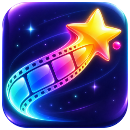
StarCapture
Le montage vidéo, dans ton IDE.
StarCapture
Claude monte pour toi
- Timeline multipiste
- Sous-titres mot par mot
- Coupe des silences
- Export par la carte graphique
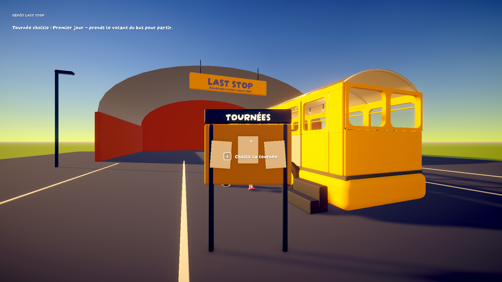
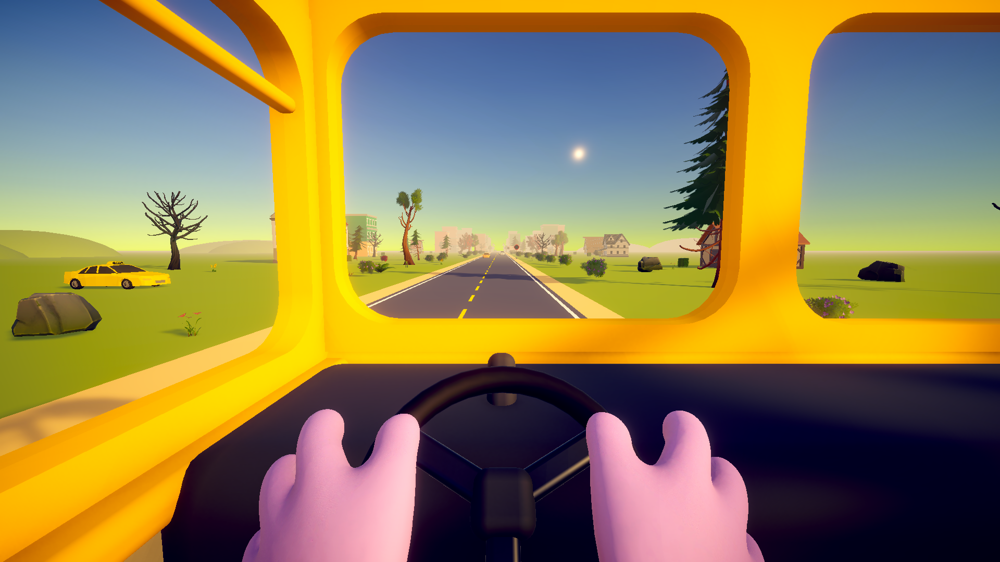
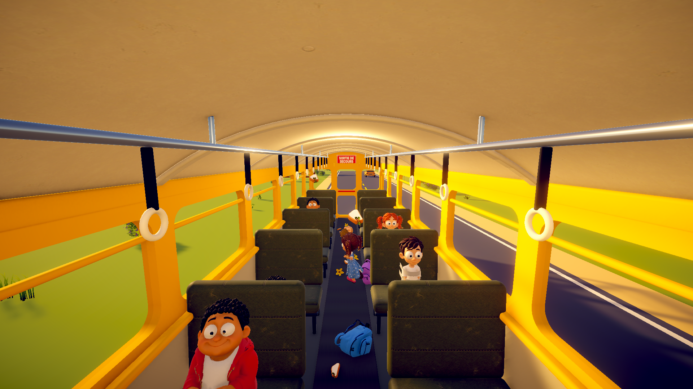
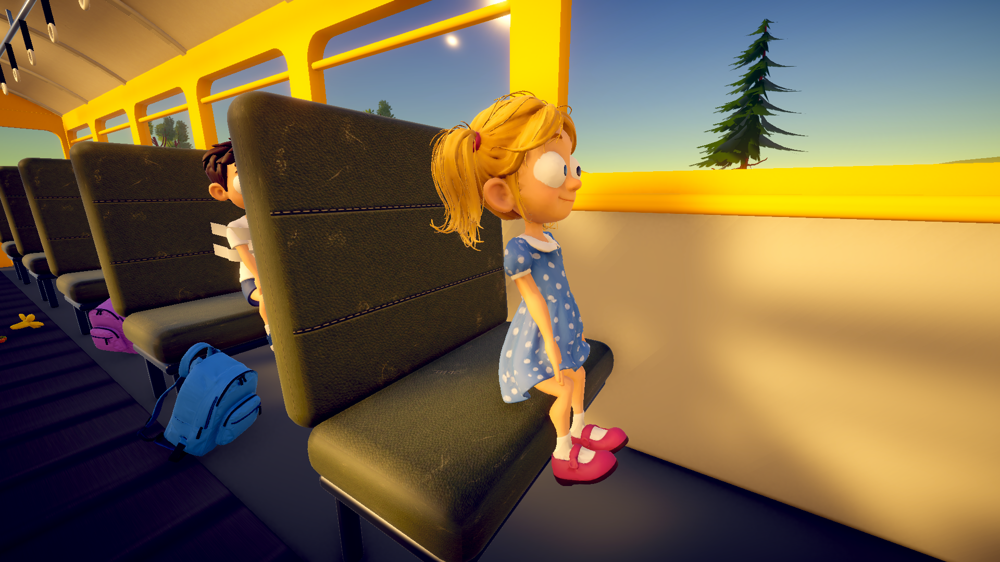
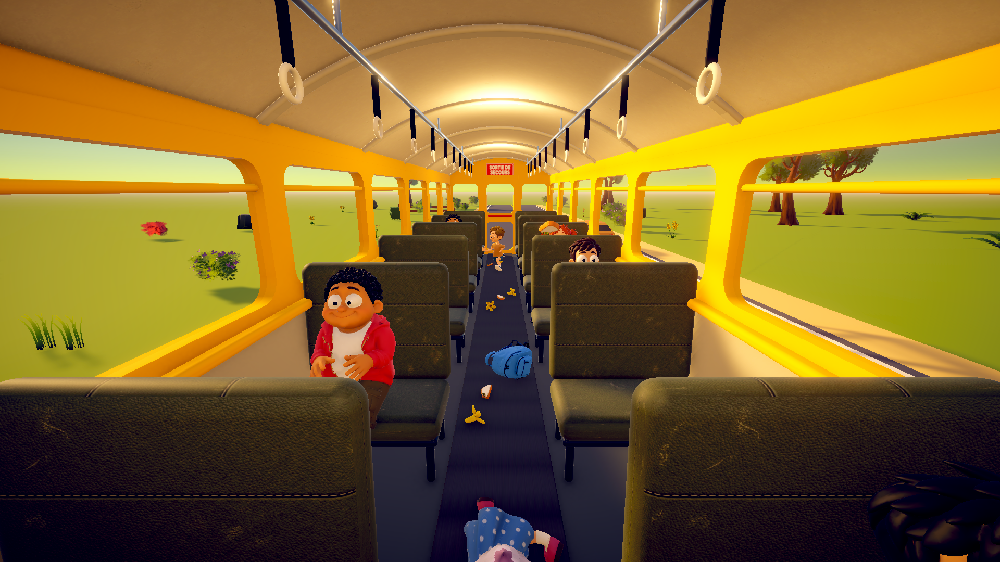
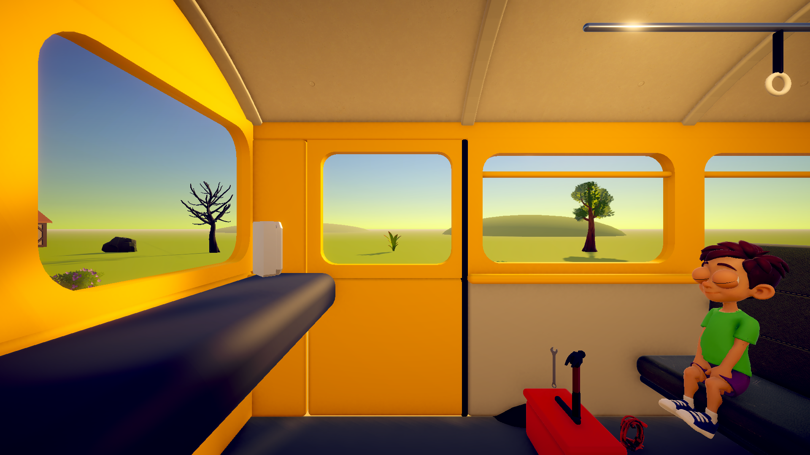
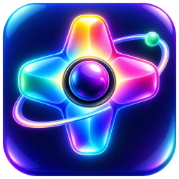
NovaGame
Ton jeu Unity tourne dans l'IDE.
NovaGame
Tu joues sans quitter Orbit
À l'image : Last Stop, un jeu co-op construit avec Claude.
ZQSDEspace
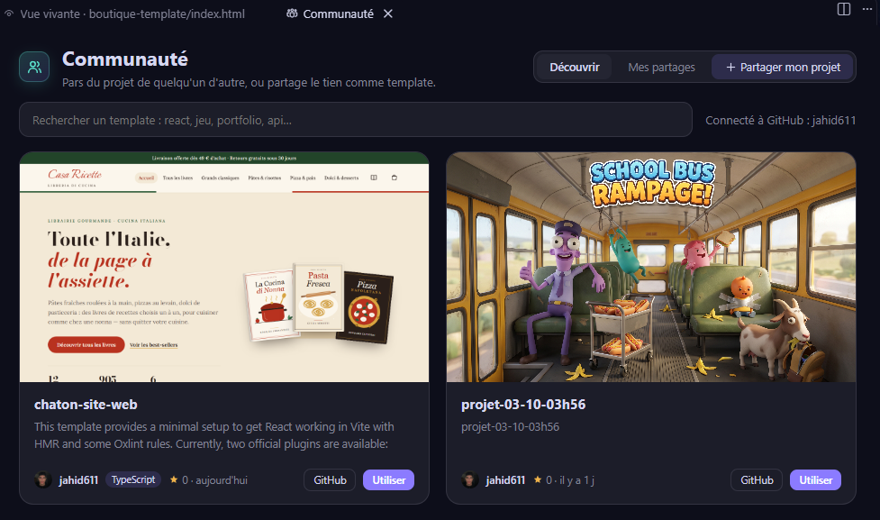
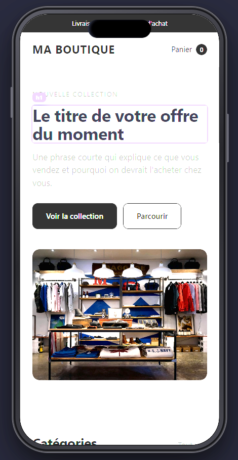
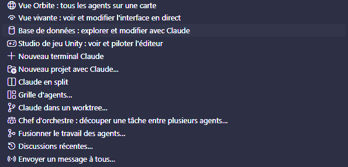
Communauté de templatesColler une captureWorktreesStudio de thèmesBase de donnéesCommunauté de templatesColler une captureWorktreesStudio de thèmesBase de données
Claude pilote l'IDECommit intelligentSuivi des jetonsRecettesMode auto en un clicClaude pilote l'IDECommit intelligentSuivi des jetonsRecettesMode auto en un clic
Et tout le reste.
Orbit
Ton code. En orbite.
Fait pour Claude Code · Windows, macOS, Linux